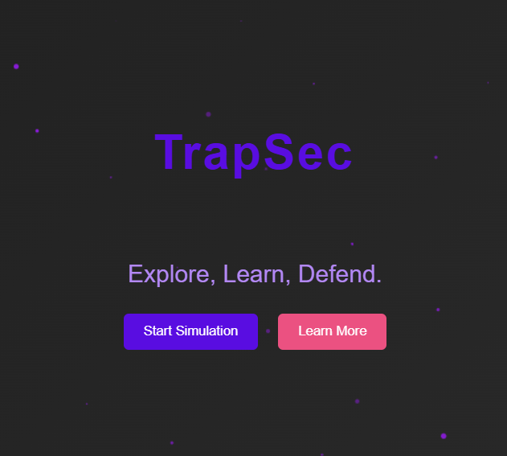

Projects

Trapsec
Trapsec is a cybersecurity project designed to simulate various web-based attacks in a controlled environment. This project serves as an educational and research tool to help security professionals, students, and ethical hackers understand common web vulnerabilities and their impact.
View Website
PhishDetect
PhishDetect is a command-line tool designed to analyze email or message content for potential phishing threats. It detects malicious links, suspicious keywords, and fraudulent phone numbers, helping users avoid scams.
View Repo